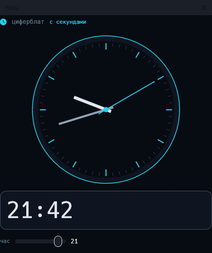
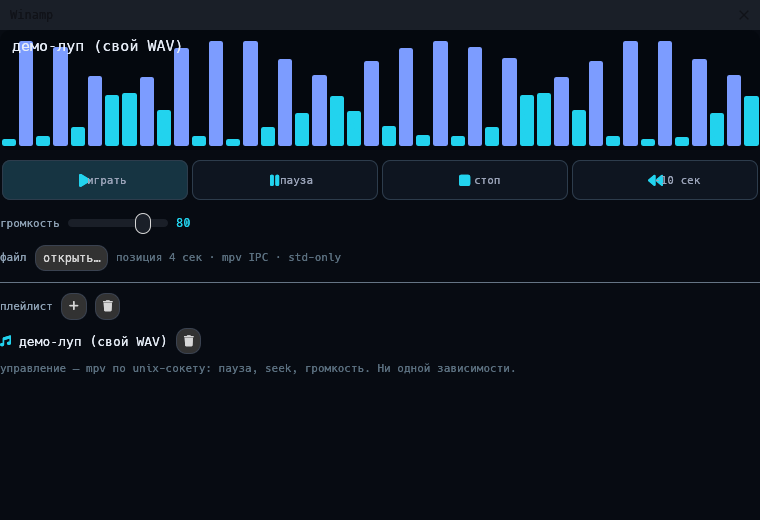
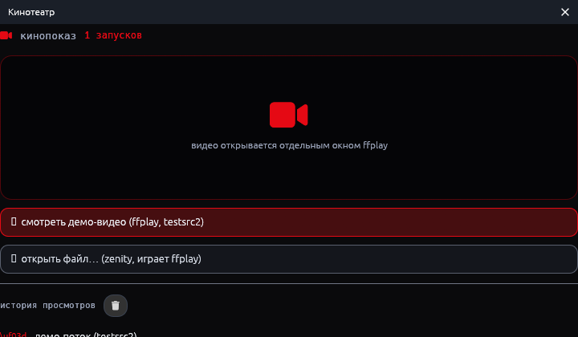
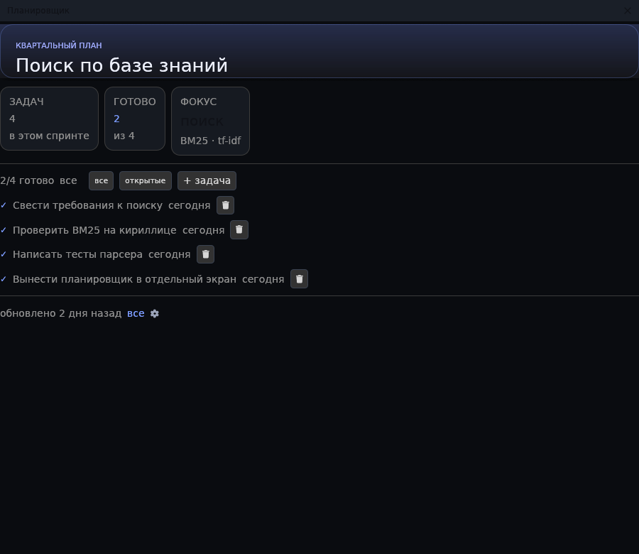
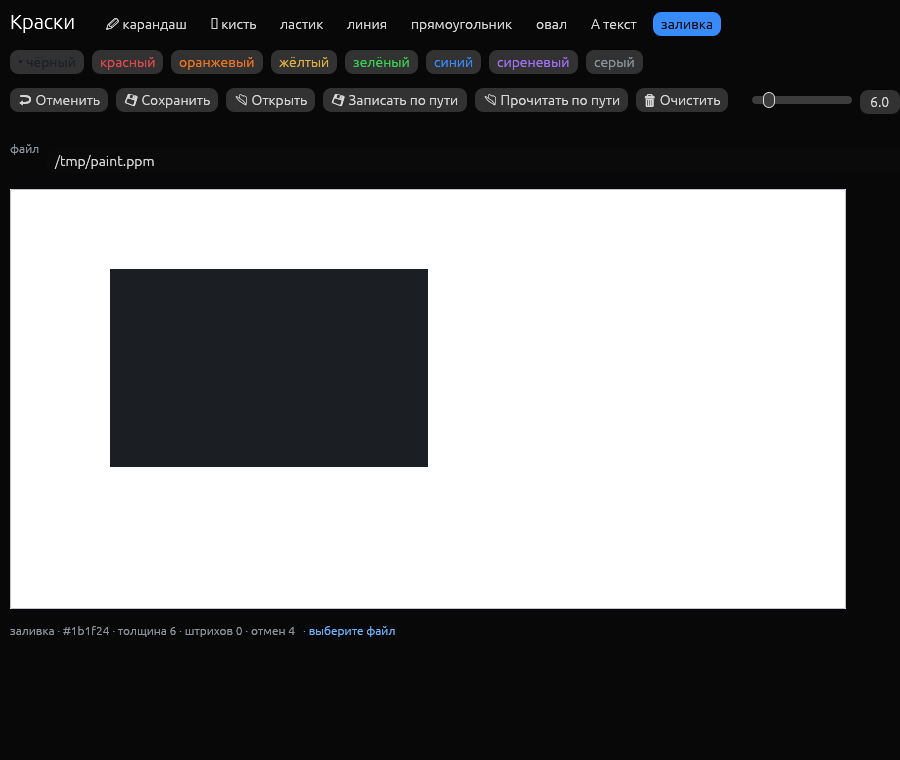
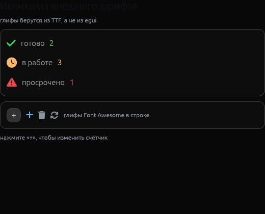

Опиши экран как данные — получи настоящее приложение
lazr превращает модель окна в проект Rust + egui, собирает его и проверяет запуском: рисует кадр без окна и прогоняет каждое действие, печатая, что именно изменилось. Модель — один файл, который читается глазами и правится одной строкой.

Как это работает
Три шага, каждый проверяем машиной. Ничего «на глаз».
# 1. модель: окно, поля, виджеты, обработчики window "Задачи" 460 520 store "~/.local/share/lazr/todo.store" theme dark accent:#22d3ee panel:#070b12 round:14 state items list "молоко,хлеб" vbox list -> items "пусто" hbox label "• {item}" {mono, hint:"строка списка"} button "убрать" do remove items
# 2. генерация и проверка $ lazr build задачи $ lazr verify задачи headless ok: 3 фигур, 4 виджетов в модели действие «убрать»: items: [молоко, хлеб] → [хлеб] selftest ok: 1 действий итог: проверено # 3. запуск $ lazr run задачи
Модель читается двумя синтаксисами: строчные формы (человеку и CLI) и S-выражения
(программе и агенту). lazr live исполняет формы напрямую, без конвертации, и показывает окно,
которое перечитывает файл на каждом изменении.
Демки — каждая собрана из модели
Ни одна картинка не нарисована отдельно: это окна настоящих приложений, собранных lazr build.
when … else. 46 строк модели, сборка 732 мс.

mpv по unix-сокету, позиция спрашивается у mpv, пауза/seek/громкость командами, визуализатор рисует модель. Проверено запуском: время растёт, на паузе стоит, «стоп» закрывает mpv.
ffplay запускается из демки по клику, свой файл выбирается через zenity, история просмотров живёт в модели.
{pill}, мягкая тень слоями в Rust-виджете, своя рамка окна, фильтр задач.




{item}, своя кнопка «убрать», начальные элементы через запятую.
Возможности
Всё ниже работает и в генераторе, и в живом режиме — и проверено запуском, а не «должно работать».
Окно как часть модели
chrome:own — своя рамка с заголовком, крестиком и двойным кликом «развернуть»;
плюс resizable, topmost, transparent, drag-anywhere, min, max, center.
Состояние между запусками
store "путь": поля читаются при старте и пишутся при изменении. Запись атомарная
(временный файл + rename), ~ раскрывается в HOME.
Типографика
Свой TTF на весь интерфейс (font-family), моноширинный текст у отдельного виджета
({mono}), подсказки при наведении ({hint:"…"}).
Иконка окна без зависимостей
Свой PNG-декодер: zlib с полным inflate, пять фильтров, палитра, 8 и 16 бит.
Сверено побайтово с ImageMagick; окно отдаёт иконку менеджеру (_NET_WM_ICON).
42 стиля одной строкой
Frutiger Aero, Aqua, Web 2.0, Windows 95, Mac System 7, CRT green, Material 3, Neobrutalism, Cyberpunk, Nord, Catppuccin, Bauhaus… Стиль — данные, не код.
Канон и проверки
lazr fmt приводит модель к канону (идемпотентно), verify печатает диф полей,
CI собирает каждую модель и прогоняет её действия.
Честные ошибки
Ошибка — это данные: строка, код и подсказка. BAD_EFFECT, ELSE_WITHOUT_WHEN,
STORE_NEEDS_PATH — с указанием, что писать вместо этого.
MCP-сервер внутри
lazr mcp даёт агенту инструменты: показать модель, добавить виджет, собрать, проверить —
без «поговорим об архитектуре».
Границы, названные вслух
Честность важнее маркетинга: это список того, чего lazr не делает.
Чего нет
- Градиентов, теней и размытия в интерфейсе приложения: egui рисует плоско. Стиль держится на палитре, форме и ритме.
- Своих виджетов в живом режиме:
rust-widget— это Rust, поэтомуlazr liveпоказывает честную заглушку. - Установщика и подписи:
lazr packageделаетtar.gz+.desktop+ иконку, но не.debи не подпись. - Интерлейса PNG (Adam7) и глубин меньше 8 бит — такие файлы декодер отвергает с понятным текстом.
- Циклов и вызовов функций в обработчиках: в одном действии — присваивания, арифметика,
if/else,append/remove/clear.
Запуск за минуту
Нужен только Rust. Ни Python, ни node, ни системных библиотек для самого CLI.
# поставить из исходников git clone https://github.com/kostyk348/lazr cd lazr && cargo build --release install -Dm755 target/release/lazr ~/.local/bin/lazr # и первое окно lazr new привет --title "Привет" --size 380x240 lazr state привет count int 0 lazr add привет label "Нажатий: {count}" lazr add привет button "Плюс" --do "count += 1" lazr run привет
# CLI целиком
lazr new | state | add | show модель
lazr build | run | headless сборка и запуск
lazr verify сборка + кадр + все действия
lazr lisp FILE | live FILE S-выражения и живой режим
lazr fmt FILE|DIR --check канон модели
lazr png FILE --raw OUT свой PNG-декодер
lazr package поставка: бинарь, ярлык, иконка
lazr mcp сервер для агента
Модель — обычный текст, поэтому она живёт в git и читается в диффе. А ещё это значит, что интерфейс можно сгенерировать, проверить и переписать агенту, не открывая IDE.